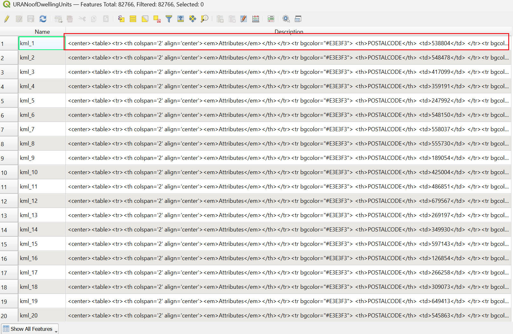
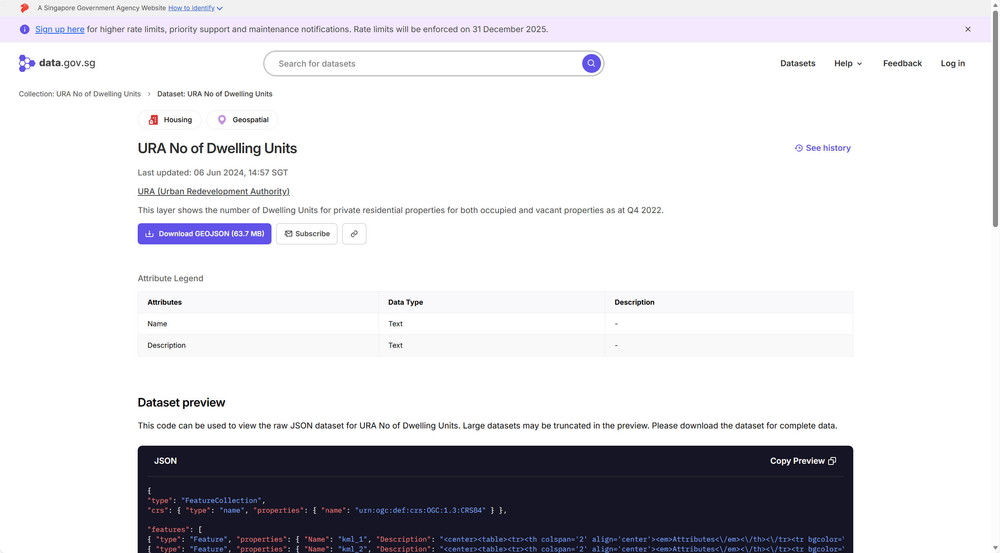
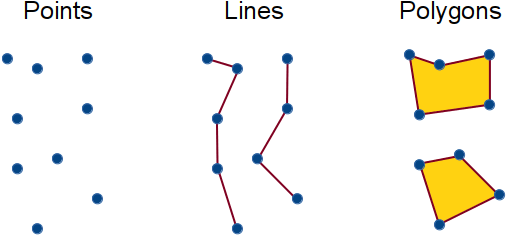
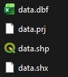
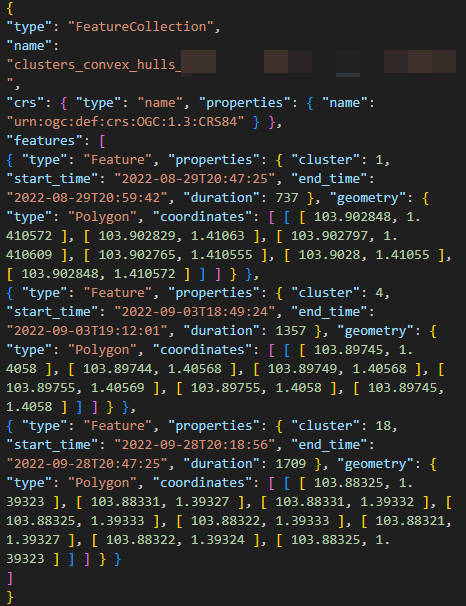
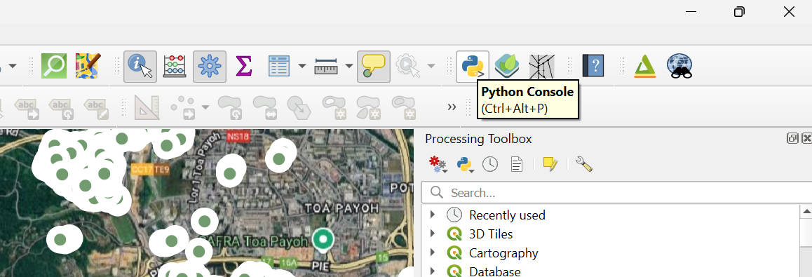
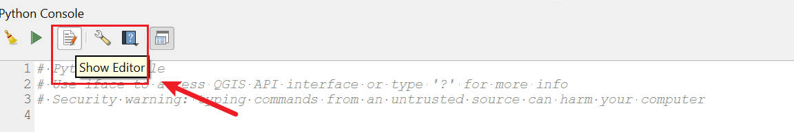

class: center <br> # Spatial Analysis of Urban Data ## Lecture and Tutorial: Spatial Data Processing and Cleaning [Bayi Li](mailto:barryli081@gmail.com) .toc-wrapper[ <div class="toc"> <a href="#week4-focus" class="toc-item">Week 4 Focus</a> <a href="#core-issues" class="toc-item">Common Data Problems</a> <a href="#formats-crs" class="toc-item">Formats and CRS</a> <a href="#workflow" class="toc-item">Cleaning Workflow</a> </div> ] --- name: week4-focus ## Week 4 Focus This lecture introduces the practical work needed to turn raw spatial data into analysis-ready spatial data. - identify common problems in raw spatial data - understand why coordinate systems, formats, and attribute structures matter - compare QGIS-based cleaning with Python-based cleaning - prepare clean, documented spatial data for later mapping and analysis --- ## Learning Objectives By the end of this session, students should be able to: 1. explain what spatial data cleaning and processing involve 2. diagnose common issues in geometry, attributes, and coordinate reference systems 3. distinguish between major spatial vector formats and their tradeoffs 4. use QGIS and Python appropriately for cleaning tasks 5. follow a reproducible workflow for preparing spatial data for analysis --- ## Lecture Outline 1. Why spatial data cleaning matters 2. Common problems in spatial datasets 3. Coordinate reference systems and spatial file formats 4. Cleaning and transformation in QGIS and Python 5. Tutorial workflow for inspection, repair, export, and documentation --- ## Why Spatial Data Cleaning Matters Spatial analysis is only as reliable as the data that enters it. - Incorrect CRS can produce wrong distances and overlays - Broken geometries can make operations fail - Poor field structure makes joins and mapping harder - Messy source formats slow down later analysis Cleaning is not a minor preparation step. It is part of the analytical method. --- ## What Needs Cleaning in Spatial Data? Spatial data usually combines two parts: 1. **geometry**: points, lines, polygons, or raster cells 2. **attributes**: names, IDs, categories, counts, dates, or descriptions Problems may occur in either part, and often in both at once. --- name: core-issues ## Common Data Problems Typical issues include: - missing or incorrect CRS - invalid geometries - inconsistent attribute names or encodings - nested or badly structured attribute values - duplicated features - mismatched identifiers for joins - source data designed for display rather than analysis --- .right_half[ <figure> <p></p> <figcaption>Attributes may be embedded in HTML or other non-analysis-friendly formats.</figcaption> <figsubcaption>Source: Screenshot from QGIS.</figsubcaption> </figure> ] ## Example: Data Designed for Display Some public datasets are released in a structure that works well for viewing but poorly for analysis. In these cases, the challenge is not only obtaining the data, but converting it into: - clear fields - usable categories - analysis-ready spatial attributes --- ## Example Source for Wrangling Data Source: [URA No of Dwelling Units](https://data.gov.sg/datasets/d_be71daeab5930f96b90ad2857454d876/view) <div align="center"> <figure> <a href="https://data.gov.sg/datasets/d_be71daeab5930f96b90ad2857454d876/view" target="_blank"> <p></p> </a> </figure> </div> This kind of dataset often requires data wrangling before the information can be joined, mapped, or summarised. --- name: formats-crs ## Coordinate Reference Systems (CRS) It is essential to work with the correct CRS before measuring, buffering, overlaying, or mapping. <div align="center"> <figure> <img src="imgs/vector/gcs_pcs.png" width="70%"> <figcaption>Geographic and projected coordinate reference systems serve different purposes.</figcaption> <figsubcaption>Source: https://www.esri.com/arcgis-blog/products/arcgis-pro/mapping/gcs_vs_pcs/</figsubcaption> </figure> </div> --- ## Geographic vs Projected CRS - **Geographic CRS** stores locations on the globe, often in latitude and longitude - **Projected CRS** converts the earth surface into planar coordinates, often in metres With projected CRS, distances and areas can usually be handled in more appropriate linear units for analysis. *Note:* Different projections introduce different distortions. A CRS suitable for display is not always the best CRS for analysis. --- ## EPSG Codes and Singapore EPSG codes are unique identifiers linked to specific coordinate reference systems. Common examples include: - EPSG: 4326 - EPSG: 3857 - EPSG: 7789 Recommended EPSG codes for Singapore: [Coordinate reference systems for "Singapore" (epsg.io)](https://epsg.io/?q=Singapore) --- ## Spatial Data Models Spatial data is primarily represented using two major models: <div align="center"> <figure> <img src="imgs/vector_n_raster_presentation.png" width="60%"> <figcaption>Raster and vector representation of real world entities.</figcaption> <figsubcaption>Source: https://gis.stackexchange.com/questions/7077/what-are-raster-and-vector-data-in-gis-and-when-to-use</figsubcaption> </figure> </div> --- ## Vector Data Basics There are three main types: 1. **Point**: (x, y) 2. **Line**: A sequence of points 3. **Polygon**: A closed line <div align="center"> <figure> <p></p> <figsubcaption>Source: https://michaelminn.net/tutorials/arcgis-pro-terrain/</figsubcaption> </figure> </div> Open [3-01_vector.ipynb](https://github.com/BayiLi081/GIS-training/blob/py-bootcamp/jupyters/3-01_vector.ipynb) with Google Colab. --- .right_half[ <figure> <p></p> </figure> <figcaption>An example of Esri Shapefile.</figcaption> <br> | File | Purpose | Required | | --------- | -------------- | ----------------- | | .shp | Geometry | Yes | | .shx | Geometry index | Yes | | .dbf | Attributes | Yes | | .prj | Projection | No (but critical) | | .cpg | Text encoding | No | | .sbn/.sbx | Spatial index | No | | .xml | Metadata | No | ] ## Common Spatial Vector Data Formats Esri Shapefile A full Esri Shapefile is not one file. It is a set of files that must stay together in the same folder. **`.shp`** * Stores the geometry (points, lines, or polygons). **`.shx`** * Index file. **`.dbf`** * Attribute table. * Stores non-spatial data (names, IDs, values). **`.prj`** * Stores the coordinate reference system (CRS). * Without it, the data has no defined projection. --- .right_half[ <figure> <p></p> </figure> <figcaption>An example of GeoJSON.</figcaption> ] ## GeoJSON - A single text file: Easy to open, share, and inspect. - Human-readable (JSON format) - Designed for the web: Works well with JavaScript, Python, and web maps. - Slower and heavy for large datasets. Best for small to medium data. --- ## KML KML (Keyhole Markup Language) - A single text file based on XML. - Designed for visualisation, not analysis. - Closely linked to Google Products. - Uses WGS84 (lat–lon) only <iframe src="https://www.google.com/maps/d/u/0/embed?mid=1821_umakbckIqqQrcKP2bU-n7vkvGwA&ehbc=2E312F" width="100%" height="280"></iframe> --- ## Read and Save Spatial Files in Python ```python file_path = "path_to_file/your_geospatial_data" file_data = gpd.read_file(file_path) ``` Refer to [Official Documentation: Read files](https://geopandas.org/en/stable/docs/reference/api/geopandas.read_file.html) ### Save GeoDataFrame as Local Files Usually to specify a driver when writing ```python file_path = "path_to_file/your_geospatial_data" # 1. Save as ESRI Shapefile file_gpd.to_file(f"{file_path}.shp", driver="ESRI Shapefile") # 2. Save as GeoJSON file_gpd.to_file(f"{file_path}.geojson", driver="GeoJSON") # 3. Save as KML (requires fiona support) file_gpd.to_file(f"{file_path}.kml", driver="KML") ``` Refer to [Official Documentation: Write files](https://geopandas.org/en/stable/docs/reference/api/geopandas.GeoDataFrame.to_file.html) --- ## QGIS Python Console and Editor The QGIS Python Console is useful when cleaning tasks need direct access to a loaded layer inside QGIS. <div align="center"> <figure> <p></p> <p></p> </figure> </div> It lets you automate cleaning tasks while keeping the GIS interface visible. --- ## When Not to Run Everything Inside the QGIS Console Running complex or large-scale tasks in the QGIS console can sometimes slow down the interface or make the session hard to manage. <div align="center"> <figure> <img src="imgs/data_cleaning/whynotrunpython_directly_withqgis.jpg" width="90%"> </figure> </div> For repeatable processing, a standalone Python script is often easier to debug, reuse, and share. --- ## Example Cleaning Logic in Python Typical cleaning code might: - inspect field names - parse nested text or HTML content - create new attribute columns - standardise values before export The detailed example script is in [qgis_py/clean_html.py](https://github.com/BayiLi081/GIS-training/blob/py-bootcamp/qgis_py/clean_html.py), which shows how HTML-like attribute content can be converted into usable fields. --- name: workflow ## Recommended Cleaning Workflow 1. inspect the dataset and metadata 2. confirm or repair CRS 3. inspect geometry validity and field structure 4. rename, recode, or extract attributes as needed 5. remove duplicates or irrelevant fields 6. export to a cleaner working format such as GeoPackage or GeoJSON 7. document every transformation --- ## Practical Workflow in QGIS and Python - Use **QGIS** for quick inspection, geometry checks, field review, and visual verification - Use **Python** for repeatable parsing, field cleaning, batch conversion, and automation - Use **both together** when the dataset is spatial but the attribute issues are too complex for manual editing This combined workflow is often the most effective in urban GIS practice. --- ## Mini Exercise Choose one spatial dataset and assess it before analysis. Your checklist should include: - file format - CRS - geometry type - important attribute fields - one likely cleaning problem - whether QGIS, Python, or both would be the best tool for fixing it --- ## Reading Material - GeoPandas documentation: https://geopandas.org/ - QGIS documentation on vector data and projections: https://docs.qgis.org/ - Fiona documentation: https://fiona.readthedocs.io/ - Shapely documentation: https://shapely.readthedocs.io/ - EPSG registry and reference search: https://epsg.io/ --- ## Key Takeaways - Spatial data cleaning is part of analysis, not a separate afterthought. - CRS, geometry validity, and attribute structure must be checked before spatial operations. - Shapefile, GeoJSON, and KML serve different purposes and carry different constraints. - QGIS is useful for inspection and repair, while Python is useful for reproducible transformation. - Clean, documented spatial data makes later cartography and spatial analysis more reliable. --- <xL>Continue with Lecture: </xL><button onclick="window.location.href='Cartographic Design.html'">Go to Cartographic Design</button> <xL>Back to course menu: </xL><button onclick="window.location.href='index.html'">Go Back to Menu</button>